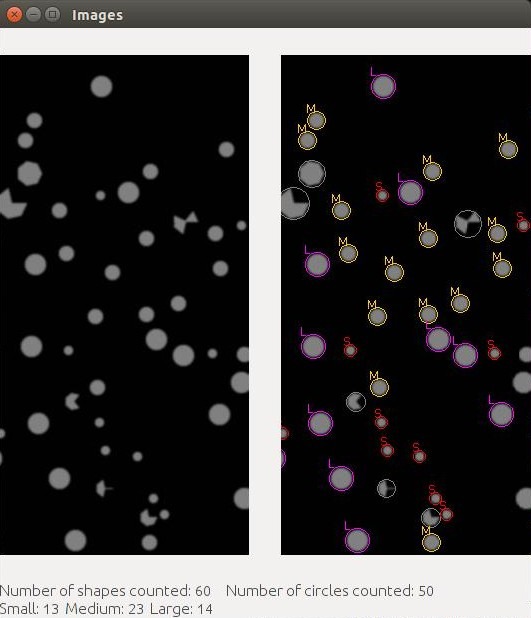
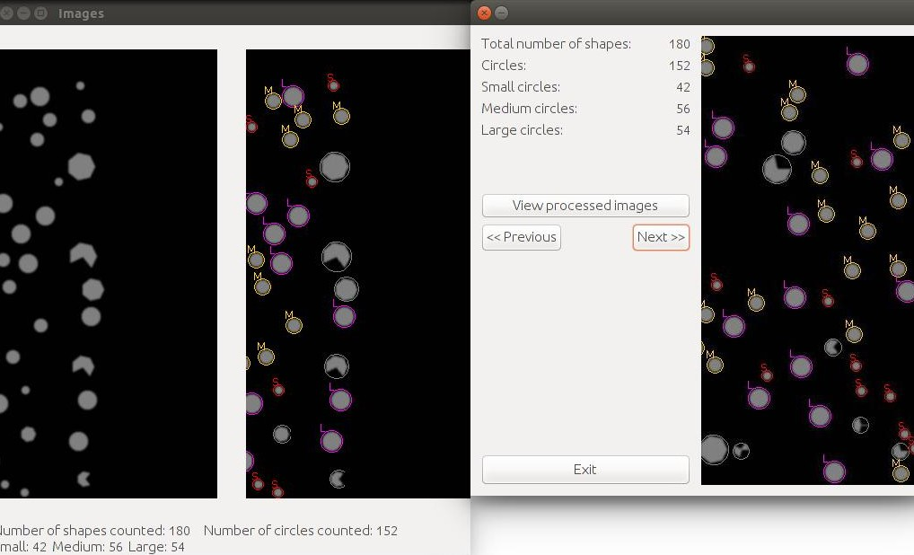

Shape detection
Sippycup process a series of images showing a sequence of shapes "moving" across the screen. It detects, counts, and categorises the circles in the shapes.
Run the CapstoneProject file and select the first image in the sequence to start the processing.
Processing the images
The raw images and processed images are shown side by side as the program runs through each sequence.
Finished
At the end of the sequence the total count and breakdown of shapes are shown. The user is also able to go through each processed image step by step.